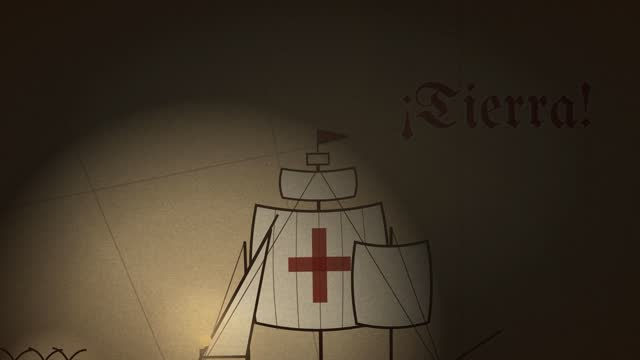
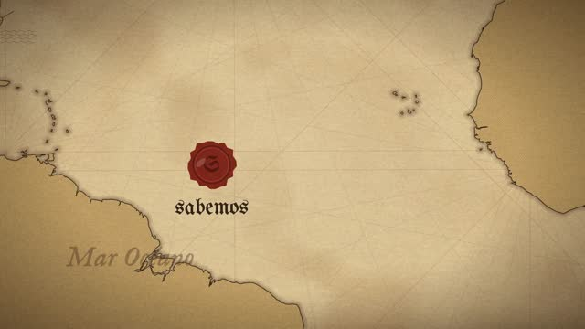
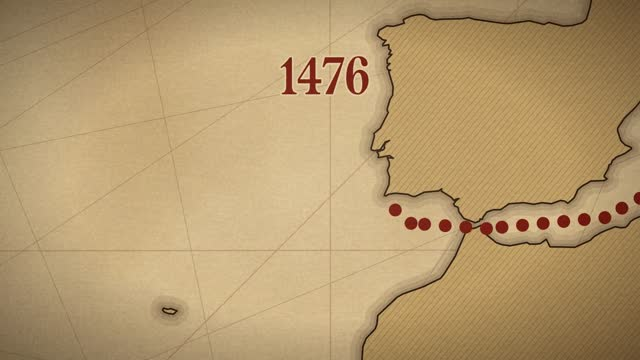
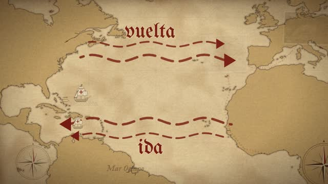
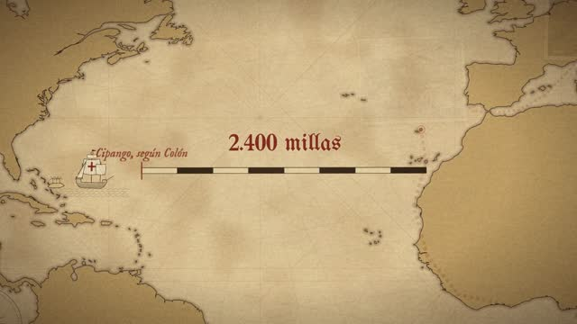
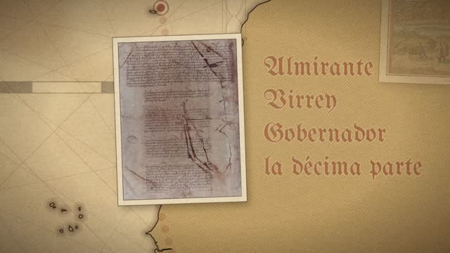

Armá tu prompt
Completá lo que sepas. El prompt se escribe solo a la derecha, con todas las reglas del plano continuo adentro. Copialo y pegalo en Claude Code.
Pegalo en Claude Code, dentro de la carpeta de tu proyecto. Funciona sin instalar nada más que el kit.
Elegí el mundo
Todo el video pasa sobre una sola superficie gigante. La cámara la recorre sin cortar: empuja sobre un detalle, se aleja para viajar y vuelve a entrar. Estos mundos están hechos con three.js, en vivo, como los haría Claude.
La cámara de bolsillo
Tocá un movimiento y miralo andar. Después apagá el resorte o la cámara en mano y vas a ver por qué un video "se siente filmado" y otro "se siente PowerPoint". Abajo de cada efecto está la frase exacta para pedírselo a Claude.
Elegí un movimiento.
Caso real: Colón
Un demo de 5:25 sobre Cristóbal Colón, hecho con este método de punta a punta: guion, voz en ElevenLabs, una carta náutica dibujada en código y una sola cámara que la recorre. Acá tenés un minuto (desde "gracias a un error de cálculo"), cómo se armó y todo lo que salió mal.
La cadena, paso a paso
- Guion1.700 palabras, datos verificables, tono cercano.
- VozElevenLabs, voz del canal. Solo la parte 1: no alcanzaron los créditos para la 2.
- TiemposWhisper saca cada palabra con su segundo;
tiempos.pyarma las anclas. - BeatsTabla de 38 filas: tiempo, narración, protagonista, texto. Aprobada antes de construir.
- MundoCostas reales de Natural Earth sobre pergamino; barcos, sellos y monasterio dibujados en SVG.
- CámaraResorte precalculado, deriva, cámara en mano, golpes en los sellos y blur en los viajes.
- RevisiónGrillas de stills por beat antes del render. Ahí aparecieron casi todos los errores.
- SonidoMúsica de Mixkit, papel en cada foto, golpe en cada sello. −14 LUFS.
Así se ve en distintos momentos






Bitácora de errores
Lo más valioso del caso. Son errores que te van a pasar a vos también; con esto los arreglás en un mensaje.
| Qué pasó | Por qué | Cómo se arregló |
|---|---|---|
| Textos viejos encimados sobre los planos generales | Los protagonistas no salían después de su beat | Cada texto se desvanece del todo 0,6 s después de su beat; lo de fondo baja a 12 %. |
| Anclas corridas: lo visual llegaba antes de la palabra | Whisper se "comió" San Vicente | Anclar en una frase vecina que sí escribió. |
| La tierra se confundía con el mar | Mismo tono de papel | Tierra más oscura + ondas grabadas en la costa. |
| Las costas no aparecían | La simplificación de polígonos cerrados devolvía cero puntos | Partir cada contorno en dos mitades antes de simplificar. |
| Rutas que mostraban un punto antes de tiempo | Una condición mal puesta | No dibujar nada mientras el progreso es 0. |
| Documento con fondo azul | El escaneo del archivo histórico | Recorte automático al preparar las imágenes. |
| Wikimedia cortaba las descargas | Muchas descargas seguidas (error 429) | Identificarse con un User-Agent y reintentar con pausas. |
| El plano final se iba demasiado lejos | Zoom final muy bajo | Zoom 0,8 con resorte lento. |
| La música no se oía | Quedó 20 dB debajo de la voz | Música a −15 dB y todo normalizado a −14 LUFS. |
| Faltó la segunda mitad del video | No alcanzaron los créditos de ElevenLabs | Calcular créditos antes de generar o usar voz local para el borrador. |
Más fotografías reales. El demo usa solo 7: el resto son dibujos en código. Cada beat con una lámina real (grabados de época, mapas, retratos) lo vuelve mucho más dinámico. Dibujos con más rayado de grabado, para que no se vean de caricatura. Y menos tiempo en el mismo encuadre: si una idea dura más de 8 segundos, la cámara tiene que moverse a un detalle.
Kit de instalación
Lo hacés una sola vez. Unos 30 minutos. Si algo falla, copiá el error entero y pegáselo a Claude.
-
1
Claude con la pestaña Code
Necesitás Claude Pro o Max y la app de escritorio. Adentro, la pestaña Code es Claude Code: el que puede crear archivos y ejecutar programas en tu compu. En el chat común esto no funciona.
-
2
Una carpeta para el video
Creá una carpeta en el Escritorio, por ejemplo
mi-faceless. En Claude → Code → nueva sesión → elegí esa carpeta. Adentro creá una subcarpetareferenciascon tus capturas de estilo y otrafuentescon tus fotos. -
3
Que Claude instale todo
Pegale este mensaje. Cuando pida permiso para ejecutar, leé qué va a hacer y aceptá. Si te pide la contraseña de la Mac, escribila vos en la Terminal (no se ve mientras la escribís, es normal).
Soy principiante. Preparame esta compu para hacer videos con código. Revisá qué hay instalado y sumá solo lo que falte, explicándome en una línea qué es cada cosa: 1. Homebrew (instalador de programas en Mac). 2. Node.js versión 20 o más (lo necesita Remotion). 3. Python 3 y uv (para preparar imágenes, audio y tiempos). 4. ffmpeg (corta, une y comprime audio y video). 5. faster-whisper con uv (saca el segundo exacto de cada palabra de la locución). 6. Un proyecto de Remotion vacío en la carpeta remotion/ (npx create-video@latest, plantilla en blanco, TypeScript). Al final, hacé una prueba: renderizá un video de 3 segundos con un texto que diga "funciona" y decime dónde quedó.
-
4
La voz (opcional)
Si vas a generar la locución con ElevenLabs, conectalo: en la app de Claude, Configuración → Conectores → ElevenLabs → Conectar. Mirá cuántos créditos te quedan antes de generar: un guion de 10 minutos ronda los 10.000 caracteres. Si querés gastar cero, pedile a Claude una voz local (Qwen) para los borradores.
-
5
Material libre
- Música y efectos: mixkit.co, libres para YouTube y redes, sin atribución.
- Fotos, grabados, mapas y documentos: Wikimedia Commons. Dominio público o CC: anotá el crédito de cada una (las CC BY-SA piden atribución en la descripción).
- Mapas y costas reales: Natural Earth, dominio público.
- Referencias de estilo: Pinterest, solo para mirar el clima. No se publican.
-
6
Instalá la skill
Con la skill, Claude ya sabe todo el método y no tenés que pegar el prompt largo. Está en la parada 06.
La skill
Todo el método en una carpeta que Claude lee sola: pide los insumos, saca los tiempos, arma la tabla de beats, te la muestra, construye el mundo, mueve la cámara, revisa stills, renderiza y mezcla.
SKILL.mdlas instrucciones, paso a pasoreferencias/prompt.mdel prompt originalreferencias/camara.tsla cámara de Colón, lista para usarreferencias/tiempos.pyanclas frase → segundoreferencias/reglas.mdreglas + checklist antes del renderreferencias/bitacora-colon.mdlos errores del caso real
Cómo instalarla
- Descargá el .zip. Queda en tu carpeta Descargas.
- En Claude Code, pegá este mensaje:
Acabo de bajar una skill a mi carpeta Descargas: faceless-plano-continuo.zip. Descomprimila e instalala en ~/.claude/skills/ para que la pueda usar en todos mis proyectos. Después confirmame que la ves en la lista de skills.
- Desde ahí, en cualquier carpeta de proyecto:
Usá la skill faceless-plano-continuo. La locución está en locucion/, las referencias de estilo en referencias/ y las fotos en fuentes/. Formato 16:9. Empezá por la tabla de beats.
También podés armar el mensaje con el generador, pestaña "Con la skill".